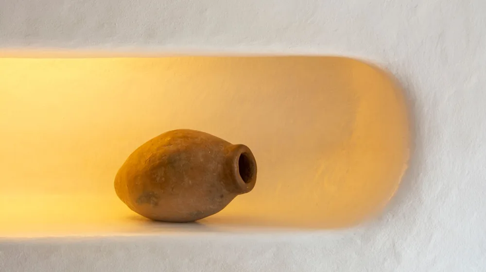

달항아리 모던 인테리어, 흔한 실수 없이 연출하는 3가지 비법
사진: Jan van der Wolf / Pexels (무료 이미지, 출처 표기)
달항아리 모던 인테리어, 왜 지금 다시 주목받을까?

달항아리는 조선 시대부터 이어져 온 백자의 한 형태로, 둥근 보름달을 닮아 '달항아리'라 불립니다. 간결하면서도 풍만한 곡선, 그리고 깨끗한 백색이 주는 특유의 여백의 미는 현대적인 미니멀리즘 인테리어에도 잘 어울려 최근 다시 주목받고 있습니다. 공간에 전통적인 아름다움과 동시에 세련된 분위기를 더할 수 있는 오브제로 평가받고 있습니다.
특히 화려한 장식보다는 절제된 아름다움을 추구하는 모던 인테리어 트렌드와 조화를 이루며, 무채색 계열의 공간에 따뜻하면서도 깊이 있는 포인트를 줄 수 있다는 장점이 있습니다. 달항아리 하나만으로도 공간의 품격을 높이는 효과를 기대할 수 있습니다.
공간별 달항아리 배치 아이디어: 전문가처럼 연출하기
달항아리는 그 자체로 예술 작품이기에 어떤 공간에 두느냐에 따라 다양한 분위기를 연출할 수 있습니다. 각 공간의 특성을 고려한 배치 아이디어를 통해 더욱 세련된 인테리어를 완성해 보세요.
- 거실: 소파 옆이나 TV장 옆 등 넓은 여백이 있는 공간에 배치하면 시선을 집중시키는 포인트가 됩니다. 큰 달항아리 한 점만 두거나, 높이가 다른 작은 달항아리 두 개를 비대칭으로 배치하여 안정감 있으면서도 리듬감 있는 구도를 만들 수 있습니다. 창가에 두어 자연광을 받게 하면 달항아리 표면의 은은한 광택과 곡선이 더욱 돋보입니다.
- 다이닝룸: 식탁 옆 코너나 사이드보드 위에 달항아리를 두면 식사 공간에 고즈넉하면서도 우아한 분위기를 더합니다. 테이블 중앙에 작은 달항아리를 배치하고, 계절에 맞는 꽃 한두 송이를 꽂아 자연스러운 아름다움을 연출하는 것도 좋습니다.
- 침실: 침대 옆 협탁이나 낮은 서랍장 위에 작은 달항아리를 두면 편안하고 안정적인 분위기를 조성할 수 있습니다. 너무 큰 항아리보다는 공간의 크기에 맞는 적당한 사이즈를 선택하는 것이 중요하며, 조명과 함께 배치하면 더욱 포근한 느낌을 줄 수 있습니다.
- 현관/복도: 손님을 맞이하는 현관이나 긴 복도 끝에 달항아리를 두면 공간에 깊이감을 더하고 시각적인 길잡이 역할을 합니다. 깔끔한 콘솔 위에 달항아리 하나만 두어도 충분히 강렬한 인상을 줄 수 있습니다.
달항아리 인테리어 초보자를 위한 핵심 가이드
달항아리 인테리어는 생각보다 어렵지 않습니다. 몇 가지 기본 원칙만 따른다면 누구나 실패 없이 멋진 공간을 만들 수 있습니다. 다음 가이드를 참고하여 당신의 집에 달항아리의 매력을 더해 보세요.
달항아리와 주변 요소 조화롭게 매치하기
달항아리 주변에는 다른 오브제를 최소화하여 달항아리 자체에 집중하도록 연출하는 것이 좋습니다. 여백의 미를 살리는 것이 달항아리 인테리어의 핵심입니다. 심플한 액자, 낮은 화분, 혹은 작은 스툴 정도만 함께 배치해 보세요.
달항아리, 이것만은 꼭! 관리 및 주의사항
귀한 달항아리를 오랫동안 아름답게 유지하기 위해서는 적절한 관리와 주의가 필요합니다. 몇 가지 기본적인 사항만 지켜도 달항아리의 가치를 보존할 수 있습니다.
청소 방법: 달항아리 표면에 먼지가 쌓이면 부드러운 마른 천이나 먼지떨이로 조심스럽게 닦아줍니다. 물 세척이 필요한 경우, 미지근한 물에 중성세제를 아주 소량 풀어 부드러운 스펀지로 닦아낸 후 마른 천으로 물기를 완전히 제거해야 합니다. 이때 표면의 흠집을 방지하기 위해 강하게 문지르지 않도록 주의합니다.
배치 환경: 직사광선이 직접 닿는 곳은 피하는 것이 좋습니다. 강한 햇빛은 달항아리 표면의 유약에 미세한 영향을 줄 수 있습니다. 또한, 급격한 온도 변화나 습기가 많은 곳도 백자 균열의 원인이 될 수 있으므로 주의해야 합니다. 진동이 심하거나 불안정한 장소보다는 평평하고 안정적인 곳에 배치하는 것을 권장합니다.
파손 주의: 달항아리는 도자기이므로 작은 충격에도 쉽게 파손될 수 있습니다. 특히 이동 시에는 바닥에 닿는 면을 보호하고 양손으로 단단히 잡고 움직여야 합니다. 아이들이나 반려동물이 있는 가정에서는 안전을 위해 손이 닿지 않는 곳에 두는 것이 좋습니다.
나에게 맞는 달항아리 구매 시 고려할 점
달항아리를 구매할 때는 단순히 가격이나 크기만을 고려하기보다 몇 가지 중요한 요소를 살펴보는 것이 좋습니다. 장인의 혼이 담긴 작품인 만큼 신중한 선택이 필요합니다.
제작 기법과 장인: 전통적인 기법으로 제작되었는지, 혹은 현대적인 해석이 가미되었는지 확인합니다. 특히 숙련된 장인의 작품은 미세한 곡선과 유약의 빛깔에서 깊이가 다릅니다. 유명한 도예가의 작품은 그 가치가 더욱 높을 수 있습니다.
유약의 질감과 색감: 달항아리는 유약의 종류와 굽는 온도에 따라 미세하게 다른 색감과 질감을 가집니다. 일반적으로 희고 맑은 백자유가 쓰이지만, 미세하게 푸른빛을 띠거나 상아색을 띠는 경우도 있습니다. 자신의 인테리어와 잘 어울리는 색감과 은은한 광택을 지닌 것을 선택하세요.
진품 여부 및 보증: 고가의 달항아리라면 진품 여부와 도예가의 서명, 그리고 관련 보증서 등을 꼼꼼히 확인하는 것이 중요합니다. 공신력 있는 갤러리나 전문점에서 구매하는 것이 안전합니다. 중고 거래 시에는 전문가의 감정을 받는 것을 권장합니다.
가격대: 달항아리는 제작 기법, 장인, 크기, 희소성 등에 따라 가격대가 매우 다양합니다. 수십만 원대부터 수천만 원을 호가하는 작품까지 존재하므로, 예산에 맞춰 신중하게 선택해야 합니다. 무리하기보다는 자신의 예산 범위 내에서 최고의 만족을 줄 수 있는 작품을 찾는 것이 현명합니다.
🔗 이 글도 함께 보면 좋아요: 삼성전자 주가, 2024년 투자 전 꼭 알아야 할 3가지 핵심 요소
관련 추천 상품
달항아리 인테리어, 백자 화병 관련 인기 상품 보러가기
이 포스팅은 쿠팡 파트너스 활동의 일환으로, 이에 따른 일정액의 수수료를 제공받습니다.